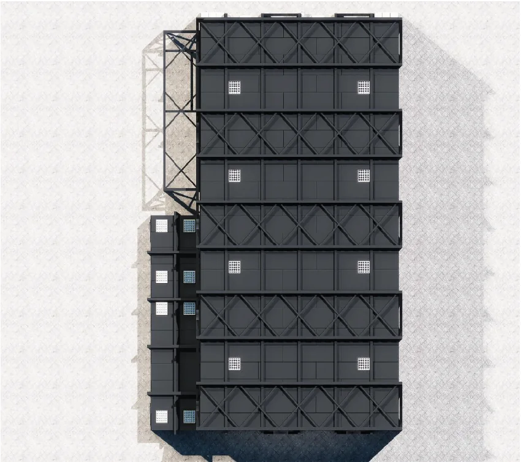

SAC-10
10 m semi-anechoic chamber
Spacious enough for complete vehicles and voluminous products. Heavy-duty flooring and large turntables suit ruggedised military component and vehicle testing, and the longer distance lets large products be measured in their far field. Commercial, automotive, military and avionic test procedures can all be performed here.
- Typical use
- Vehicles, military and avionic equipment, very large commercial products